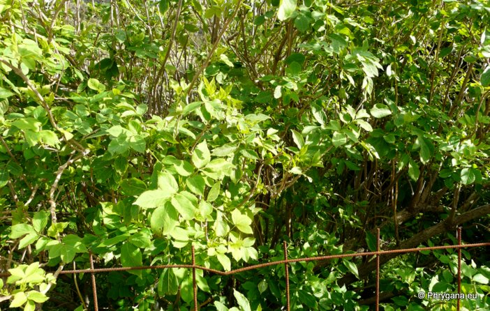
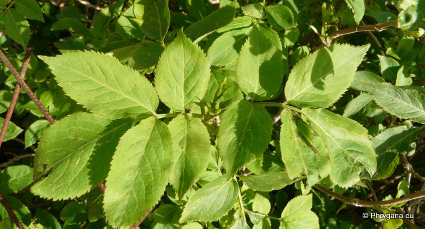
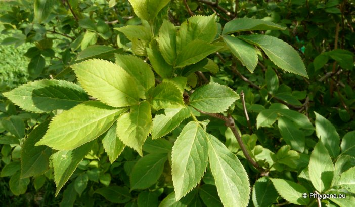
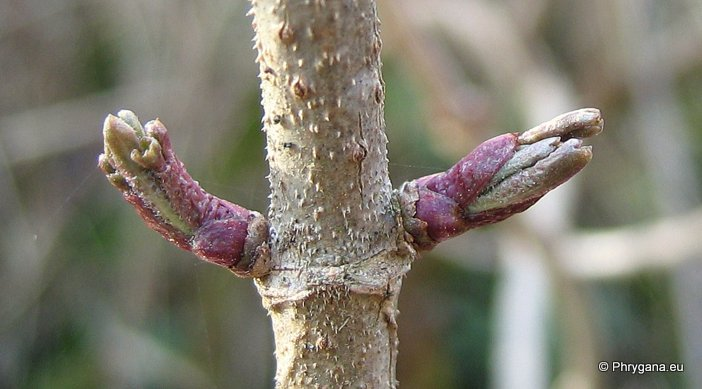
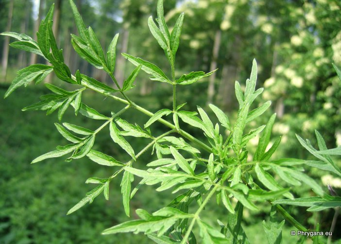

| PHRYGANA | Fauna | Flora | Galles | liste des espèces |
contact -
info - commentaires phrygana1 (at) gmail.com |
| Particularités crétoises | nouveautés | Mines | ressources naturelles |
| Sambucus nigra L. |
| 439 | Flora | ADOXACEAE | Sambucus L. |
|
 Sambucus nigra Apodoulou 03 février 2013 |
| le Sureau noir -- Gewone vlier -- Schwarzer Holunder -- Elder -- Sambuco comune -- Saúco negro | |
| Arbuste dont les rameaux ont la moelle blanchâtre; bourgeons brun rougeâtre, ovoïdes. Longévité: jusqu'à 80-100 ans | |
| Feuilles: opposées, composées imparipennées (5-7 folioles); folioles ovales-acuminées, un peu velues sur les nervures, dentées; stipules petites, parfois absentes | |
| Tronc et branches à écorce gris beige; jeunes rameaux avec de nombreuses lenticelles | |
| Fleurs: fleurs hermaphrodites, odorantes, blanc crème en cyme corymbiforme (10-15 cm de diamètre); pétales obtus au sommet; anthères jaunes | |
| Fruit: une drupe globuleuse noire à maturité | |
| Espèce dispersée par les animaux | |
| Hauteur: 1 - 10 m | Type biologique: nanophanérophyte caducifolié |
| Floraison en Crète: avril mai juin juillet | |
| Altitudes en Crète: 0 - 800 m | |
| Statut en Crète: introduit | |
| Biotopes en Crète: terrains riches, abords de maisons | |
| Distribution: Europe, Asie occidentale, Afrique du Nord | |
| Belgique: indigène: bois et taillis sur sols riches ou rudéralisés, haies, dunes littorales, parcs, abords des habitations; souvent cultivé, lisières forestières, terrains humides | |
| Plante médicinale: parties utilisées ==> les fruits | |
| Usage culinaire: les fruits et fleurs sont utilisés pour la fabrication de boissons, de sirop, confitures | |
| Note: plante mellifère | |
| OBS. - il existe plusieurs variétés cultivées dont des variétés à feuillage jaune ou panaché de jaune et de vert, et parfois naturalisées | |
| -- la var. laciniata L. à folioles profondément incisées, cultivée et naturalisée. Pas en Crète | |
| -- la var. nigra f. alba (WESTON) REHD., à fruits blanchâtres ou vert pâle, translucides. Pas en Crète | |
| Source de nourriture pour: | |
| --- Insectes mineurs: Diptera: Liriomyza amoena | |
| --- Lepidoptera: Udea olivalis | |
|
 Sambucus nigra Apodoulou 03 février 2013 |
|
 Sambucus nigra Apodoulou 03 février 2013 |
|
 Sambucus nigra Rosières (Belgique) 25 janvier 2005 |
|
 Sambucus nigra var. laciniata La Hulpe - parc Solvay (Belgique) 21 mai 2007 |
| 16 février 2013 |
| © paul fontaine -- © Phrygana.eu 2007 -- 2013 |